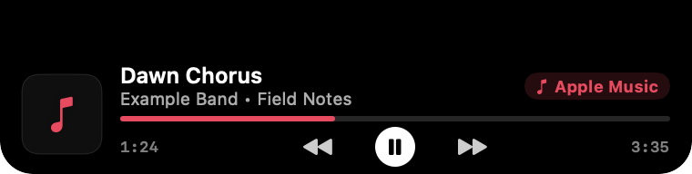
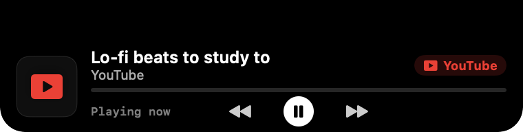
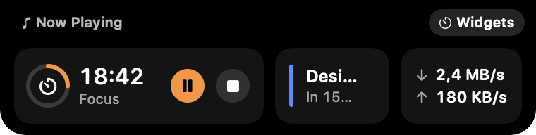
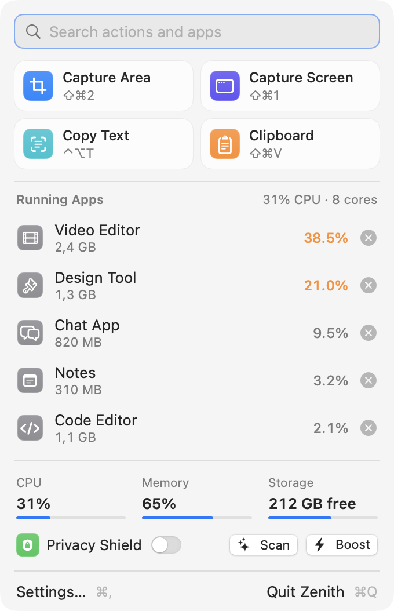
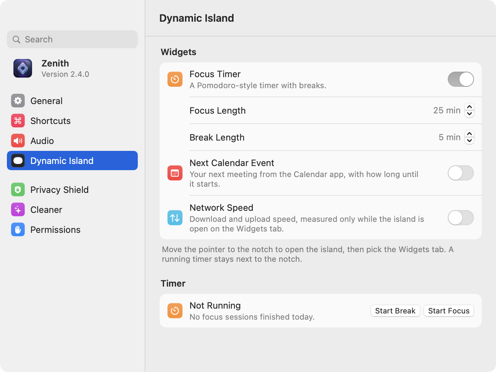
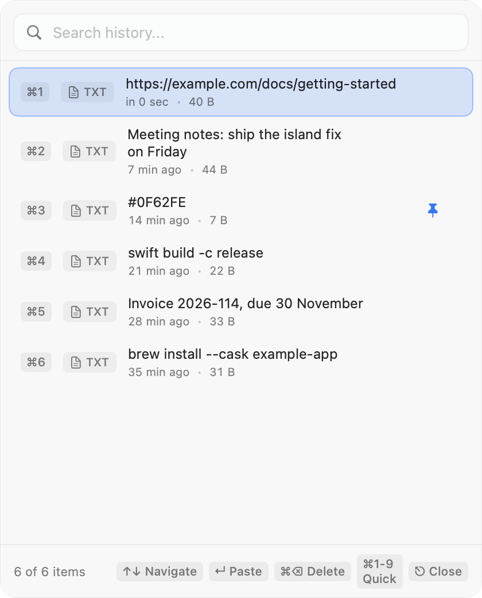
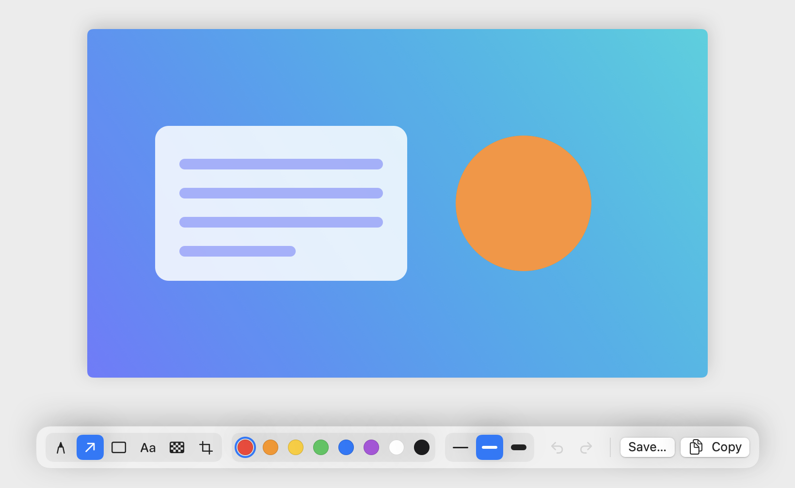

Screen OCR and QR reader ⌃⌥T
Drag over any part of the screen. The recognised text, or the payload of a QR code or barcode, goes to the clipboard.
- Apple Vision, on device: nothing is uploaded
- Uses the languages your system supports
macOS 13+ · Swift 6 · MIT license
Clipboard history, screen capture and annotation, on-device OCR, an island in your notch with Now Playing, a focus timer and your next event, a disk cleaner and a local DNS-over-HTTPS proxy. Native, open source, and no analytics code.
Zenith is signed ad hoc and not notarized yet, so macOS asks you to confirm the first launch. How

Six tools that live in the menu bar and stay out of the way. Everything runs on your Mac.
Drag over any part of the screen. The recognised text, or the payload of a QR code or barcode, goes to the clipboard.
Area or full-screen capture with a 16× pixel loupe and colour readout, then an editor for the markup.
A searchable history you can drive from the keyboard, with a preview of each item, filters and pinning.
Now Playing for Music, Spotify and browser audio, a focus timer and your next calendar event, a charging HUD, and a shelf to park files and snippets at the top of the screen.
Scan caches, build folders, old installers, deleted apps' leftovers and junk on external drives; uninstall or slim an app by dropping it on the shelf; quit heavy processes.
A local proxy that resolves the names of the sites you visit over DNS-over-HTTPS and splits the first TLS packet in two.
These are the app's real views, drawn by Zenith with made-up data (Zenith --render-screenshots),
so no one's clipboard, tracks or processes are in them.






Tools that delete files and change network settings should be boring and predictable. These are the rules the code follows. Most have automated tests; the confirmation dialogs live in the app target, which has none.
Better to read these here than to find out later.
Releases are signed ad hoc. macOS will warn on first launch until there is an Apple Developer ID behind them.
It hides the names you look up, not the addresses you connect to or your IP. It covers apps that honour the system proxy, on the primary network service. The packet splitting has not been verified against a real filtering network.
Folders of deleted apps are only offered when they look like a bundle identifier, no same-vendor app is installed and nothing has touched them for 30 days. Nothing is ticked for you, because they can hold data you would want back.
Tab titles work for Safari and Chromium browsers. Firefox has no AppleScript, so the island shows only its name, and Firefox audio detection has not been tried.
CI runs on macOS 15. The tests that need a window server run only on a Mac with a desktop session.
macOS requires it to capture the display, for the loupe and for OCR. It asks the first time you take a capture.
Lets Zenith press ⌘V to paste for you and send the media keys that control a browser tab. Without it, items are only copied and the island says how to allow it.
Lets Zenith control Music and Spotify and read the front tab of Safari and Chromium browsers for the track title. macOS asks once per app.
Requires macOS 13 Ventura or later.
git clone https://github.com/mynameisbat/zenith-macos.git
cd zenith-macos
./scripts/bundle_app.sh
open Zenith.appNeeds Xcode 16+ or the Command Line Tools with a Swift 6 toolchain.